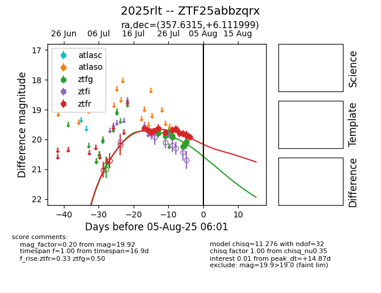

Target 2025rlt at 2025-08-05 06:01, see:
FINK: fink-portal.org/2025rlt
Lasair: lasair-ztf.lsst.ac.uk/objects/2025rlt
ALeRCE: alerce.online/object/2025rlt
TNS: wis-tns.org/object/2025rlt
YSE: ziggy.ucolick.org/yse/transient_detail/2025rlt
alt names
ZTF25abbzqrx (ztf,fink)
2025rlt (tns,yse)
coordinates:
equatorial (ra, dec) = (357.6315,+6.11200)
galactic (l, b) = (96.7946,-53.64001)
photometry
last ztfg=20.09, ztfr=19.92
11 ztfg, 13 ztfr detections
